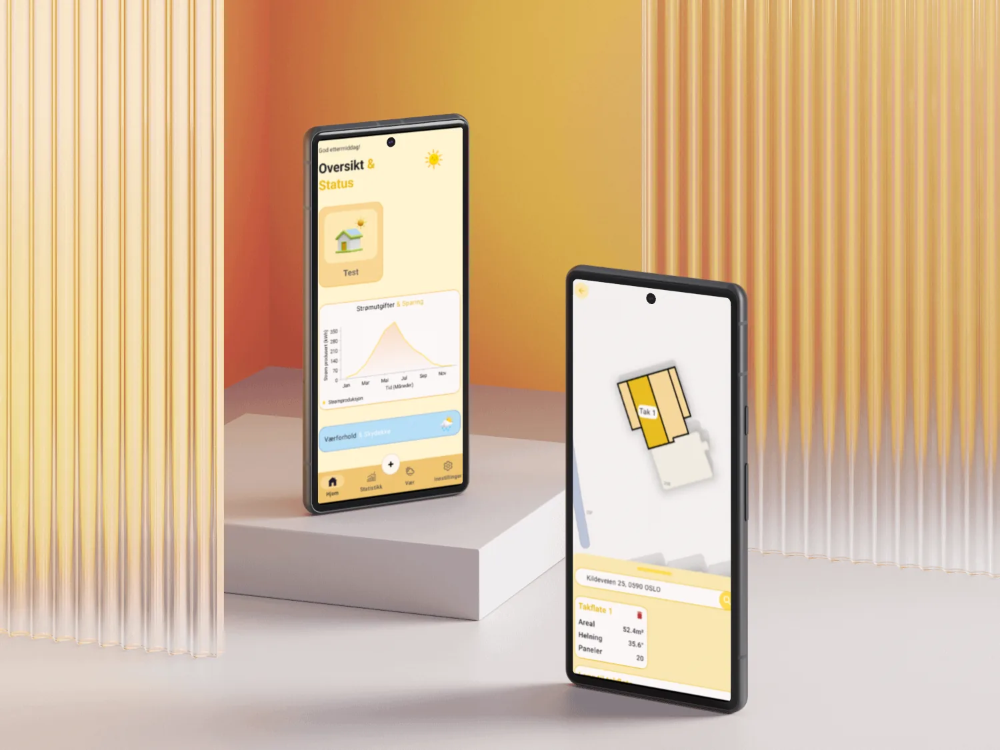
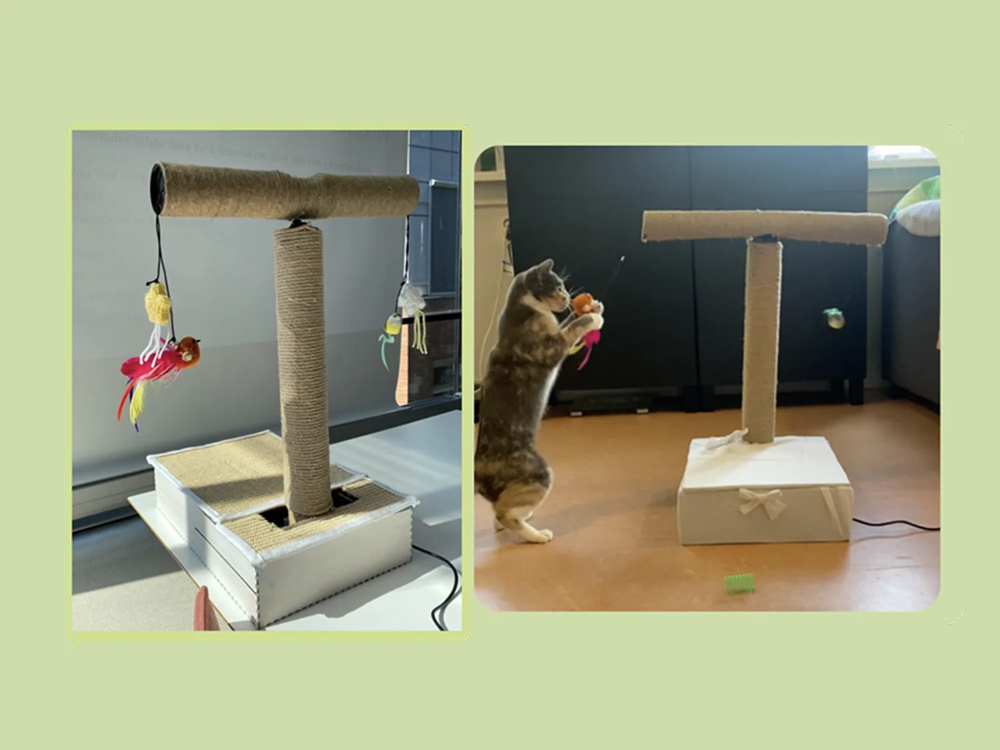
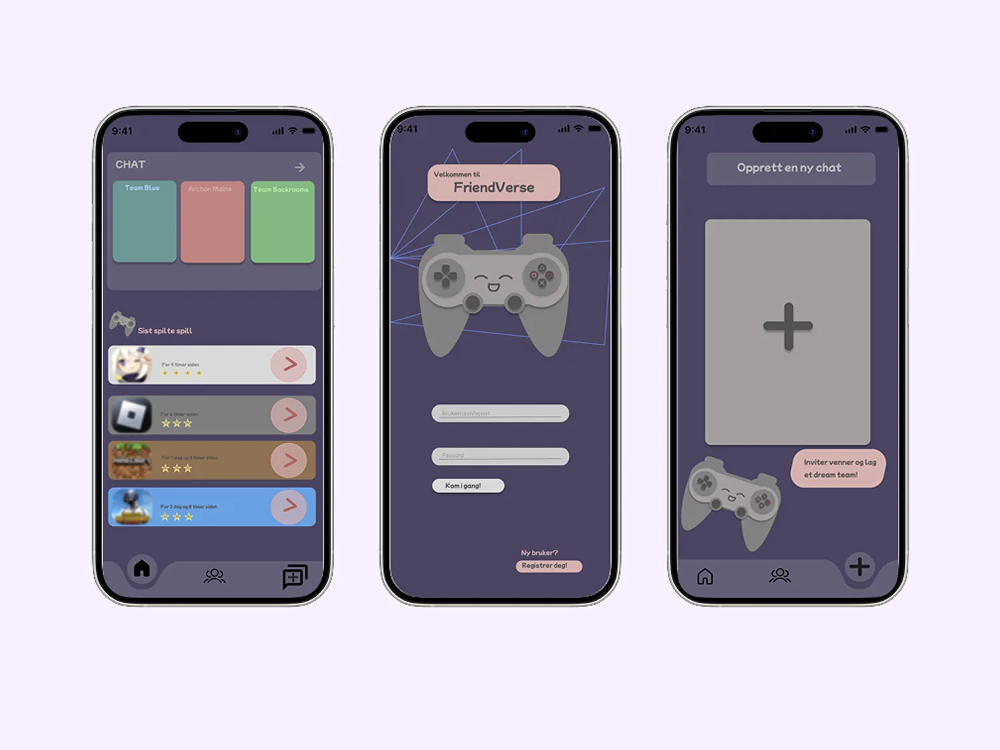
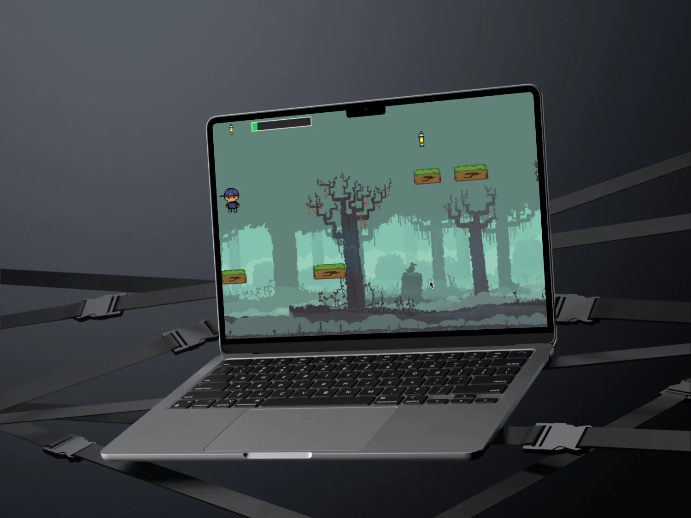
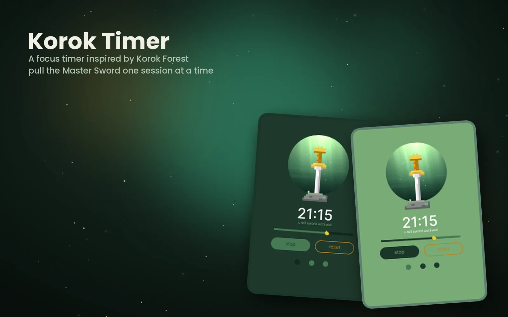
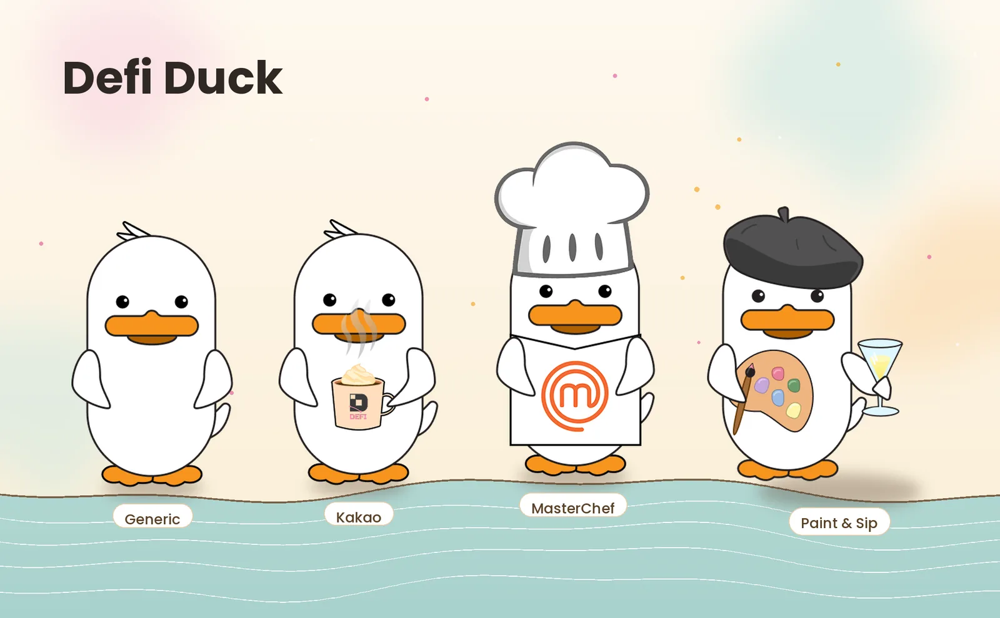

SunSaver er en Android-applikasjon utviklet i tverrfaglig teamarbeid som en del av emnet IN2000. Målet var å gi brukere innsikt i lønnsomheten ved å installere solcellepaneler på egen eiendom.

Et spennende prosjekt der en gruppe katteentusiaster utforsket potensialet til Arduino, og hvordan vi kan bruke og forme verktøyet for livlige katteeiere som ønsker å skape et sterkere bånd med sin pus.

FriendVerse er en app som gjør det mulig for venner på nettet å kommunisere med hverandre, uavhengig av språk.
Mockup under arbeid. Mer kommer snart.

Et spørsmålsspill som utfordrer din evne til å fokusere og samle nok poeng til å redde jungelen fra det onde monsteret Fanous. Vil du hjelpe Rex med å bringe lyset tilbake til Jungelen?

Korok Timer er en Pomodoro-app for skrivebordet som gjør fokusøkten din om til å trekke sverdet fra steinen: samle tre hjerter mens økten går, og vinn mestersverdet til slutt. Enkel, rolig og litt lekent, inspirert av Korok-skogen fra The Legend of Zelda.

Defi Duck er en maskotdesign laget for DEFI, med fire ulike personas: Generic, Kakao, MasterChef og Paint & Sip.